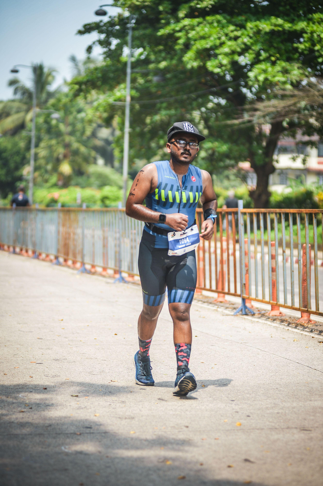

From Dreams to Reality: My Journey to Becoming an IRONMAN
Introduction
Embarking on the challenging journey of an IRONMAN is no small feat. It requires determination, resilience, and a support system that stands strong through every trial. As Napoleon Hill once said, "Whatever the mind of man can conceive and believe, it can achieve." This quote perfectly encapsulates the essence of my IRONMAN story.
My Journey
The Race Day Challenge:
On the fateful 8th of October 2023, I stood on the start line, knowing that I had a 1.9km open water swim, a 90km cycling leg, and a 21.1km run ahead of me. Little did I know that the path to the finish line would be filled with unexpected challenges—a misguided longer sea swim loop, a flat tire on the bike, chain slipping, cramps in the legs, extreme heat, and humidity. Yet, with unwavering determination, I conquered each obstacle, completing the race in 8 hours and 7 minutes.
Balancing Passion and Reality:
Managing the demands of a triathlon alongside a professional and personal life is no easy feat. The sport demands dedicated time that becomes harder to find as responsibilities grow. However, my journey was fueled by passion, supported by family and friends, and marked by the absence of some conventional training elements. No personal coach, professional guidance, or top-notch equipment—just a zeal to succeed.
The Essential Ingredients:
Becoming an IRONMAN requires more than physical training; it demands emotional and mental strength. A sea swim practice, a well-thought-out nutrition plan, and the constant support of family and friends play a crucial role. In my journey, the belief and blessings of my parents, the companionship of friends, and the dedicated support of individuals like Prathmesh, Dnyaneshwar, and others were indispensable.
Acknowledging the Pillars of Support:
Special mentions go to those who stood by me throughout this incredible journey. @pc_fortyseven, My cycling buddy, was a constant force, providing assistance whenever I faced challenges. @dnyaneshwar.honde stepped in during the final moments, highlighting the importance of having a supportive presence. @hardik_rath0d, my running partner, fueled those early morning runs, @gshreya_27 offered moral support, reminding me of the importance of consistency. @akshay_bordekar's motivational quotes and calls provided the extra push needed to stay on course.
Triathlon Images

A Shared Victory
This success is not mine alone; it belongs to everyone who played a part, no matter how small, in my journey. To each person who contributed, I extend my heartfelt gratitude. Your belief, support, and contributions made this dream-turned-reality possible.
Conclusion
As I continue my journey towards completing the full IRONMAN, I carry with me the invaluable lessons learned, the challenges overcome, and the enduring support of those who believed in me. To everyone who has been a part of this adventure, thank you. The full IRONMAN is in process, and with your blessings, I will continue to push towards new heights.
About Me
Hello! I'm Siddhant Pravin Chavan, a 26-year-old with a passion for challenges and a diverse background that blends business, athletics, and personal development.
Academic Journey: I hold a Bachelor's degree in Accounting and Finance, laying the foundation for my understanding of the intricate world of numbers. Building upon that, I pursued an MBA with a specialization in Business Analytics, equipping me with the skills to decipher data trends and make informed business decisions.
Professional Endeavors: As a business promoter, I thrive on turning ideas into reality, navigating the dynamic landscape of entrepreneurship. My experience extends across various domains, including my involvement in the vibrant worlds of cyclothron, marathons, and college events.
Athletic Pursuits: I'm not just confined to the boardroom; I'm also an Ironman Tri-athlete. The discipline required for this grueling competition mirrors my approach to both business and life. Whether it's the rush of a marathon or the strategic planning of a business venture, I bring the same vigor and determination.
Holistic Lifestyle: An active lifestyle is key to my routine. I'm a regular at the gym, where I channel my energy into maintaining physical fitness. Additionally, swimming is not just a sport for me but a form of meditation—a serene escape that complements my dynamic life.
Continuous Learning: In my journey of self-improvement, I've embraced Neuro-Linguistic Programming (NLP). It's a tool that not only enhances communication but also deepens my understanding of human behavior, a valuable asset in both professional and personal spheres.
Join me in navigating the intersections of business, athleticism, and personal growth. Let's explore the limitless possibilities together!